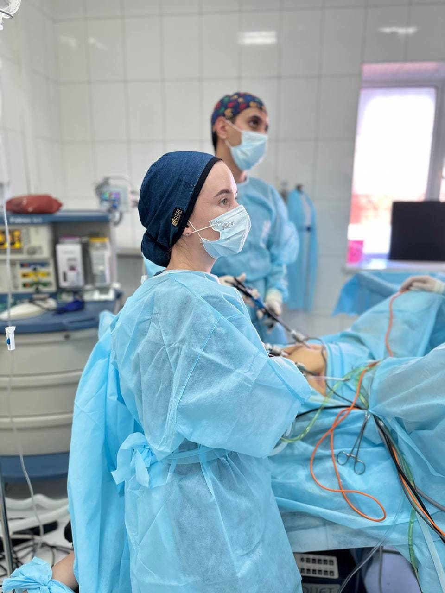

Помогаю разобраться, что мешает беременности — и убрать эту причину. Поэтапно, спокойно, без обещаний «гарантированной беременности за месяц».

✦О бесплодии говорят, если беременность не наступает в течение года регулярной близости без контрацепции (до 35 лет) или в течение 6 месяцев — после 35 лет.
Это не приговор. В большинстве случаев есть конкретная причина — и её можно либо вылечить, либо обойти. По статистике до 80% пар с диагнозом «бесплодие» в итоге становятся родителями.
В моей практике на первичной диагностике чаще всего находим:
Подробный анамнез: ваш цикл, история, попытки, обследования, операции в прошлом. Сразу обсуждаем, что обследовать у партнёра.
Гормональный профиль на 2–5 и 21–23 день цикла. УЗИ-мониторинг с оценкой овуляции. Мазки, ПЦР на инфекции. По показаниям — оценка проходимости труб (УЗГСГ или лапароскопия), гистероскопия для оценки полости матки.
Собираем все результаты, объясняю каждый показатель простым языком. Формулируем причину или комбинацию причин — без размытых «у вас что-то с гормонами».
В зависимости от диагноза: гормональная коррекция, лечение воспаления, оперативное удаление миом, полипов, очагов эндометриоза (лапароскопия / гистероскопия). Подготовка эндометрия.
Если нужно — индукция овуляции, фолликулометрия, расчёт благоприятных дней. Сопровождаю на каждом цикле, корректирую схему по результатам.
При наступлении беременности — веду до 12 недель, помогаю с маршрутом дальше. Если за 6–12 месяцев лечения беременность не наступила — направляю к репродуктологу для ВРТ (ЭКО) с готовым обследованием и заключением.
Сама провожу лапароскопию и гистероскопию — два главных метода диагностики и лечения причин бесплодия. Не направляю «к другому хирургу».
Подробнее обо мне →Запишитесь на консультацию — за 1–2 месяца поймём, что мешает, и составим план.
Записаться